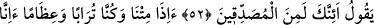
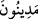

66. (Cehennemdekiler) ondan yerler ve karınlarını ondan doldururlar.
67. Sonra zakkum yemeğinin üzerine onlar için, kaynar su karıştırılmış bir içki
vardır.
68. Sonra kesinlikle onların dönüşü, çılgın ateşe olacaktır.
69, 70. Kuşkusuz onlar atalarını dalâlette buldular da peşlerinden koşup gittiler.
“İşte o zaman, birbirlerine dönerek (dünyadaki hallerini) soracaklar.”
Bu âyet “ fiiline matuftur. Yani bu muhlas kullar cennette cennet şarabını içerler.
Dünyadaki âdetleri üzere şarap üzerine konuşurlar ve karşılıklı oturarak fazilet ve
mârifetlerden, dünyada iyi yahut kötü yaşamış oldukları hadiseleri birbirlerine anlatıp
dost ve düşman ile olan maceralarını sorarlar. Cennet ehlinin birbirlerine dönerek
(dünyadaki hallerini) sormaları, mazi sığasıyla ifade edilmiştir. Bunun amacı hem te’kid
için hem de bu işin kesin olarak vukû bulacağına delâlet içindir. Âyette şuna işaret
edilmektedir: Cennet ehli - her ne kadar mü’min ve tevhid ehli (muvahhid) olsalar da -
Allah’a tamamen ikbal edemezler. Yoksa mukarreb kullarla beraber sıdk makamında
yüce huzurda olurlardı.
51. İçlerinden biri: «Benim, bir arkadaşım vardı» der.
“İçlerinden biri:” sohbet ve konuşma arasında “«Benim” dünyada “bir arkadaşım
vardı» der.”
52, 53. Derdi ki: Sen de (dirilmeye) inananlardan mısın? Biz ölüp kemik, sonra da
toprak haline geldiğimiz zaman (diriltilip) cezalanacak mıyız?
Ben mü’min olduğum ve dirilişi tasdik ettiğim için sitem yoluyla bana “Derdi ki: Sen
de (dirilmeye) inananlardan mısın?”
“Biz ölüp kemik, sonra da toprak haline geldiğimiz zaman (diriltilip)” sorgulanacak
ve “cezalanacak mıyız?” “ ifadesi, “cezâ” anlamına gelen “ kelimesinin
çoğuludur. “Ne yaparsanız onun karşılığını görürsünüz” anlamına gelen “
ifadesi
de
aynı
kökten
gelir.
Yani
diriltilecek,
hesaba
çekilecek
ve